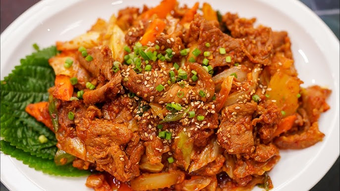
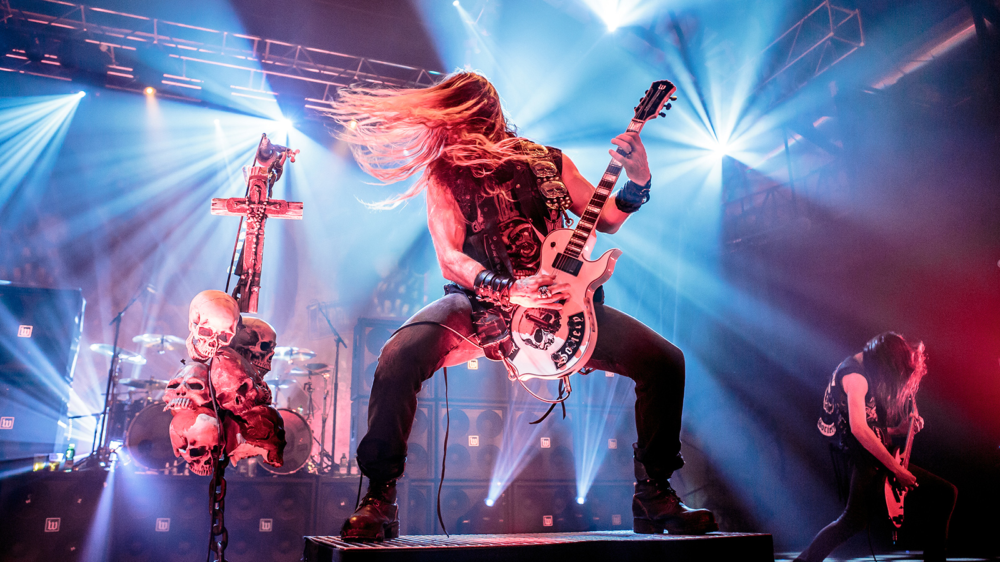
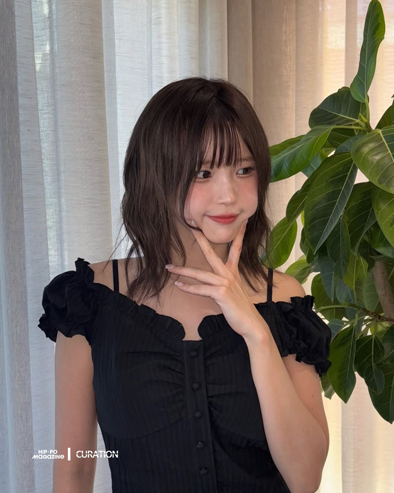
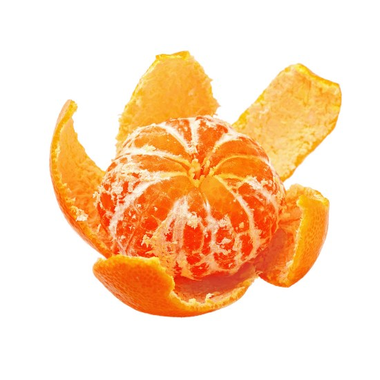
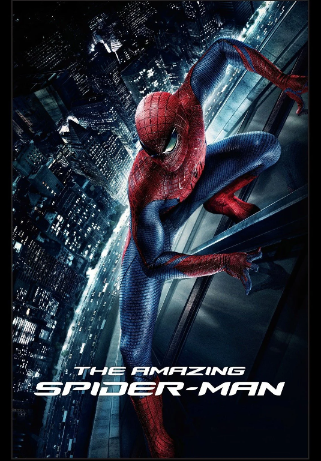

안녕하세요, 피트입니다.
우아한 테크코스를 기록하고 성장합니다.
우아한 테크코스를 기록하고 성장합니다.
| 이름 | 피트 |
|---|---|
| MBTI | ISTJ |
| 취미 | 기타연주, 합주 |
| 좋아하는 음식 | 제육볶음, 제육덮밥 |
디자인과 코딩을 모두 좋아하는 프론트엔드 개발자입니다. 사용자 입장에서
편한 흐름을 고민하며,
작은 디테일에서 완성도를 높이는 걸
즐깁니다.
최대한 할 수 있는 것을 기록하려고 노력합니다. 깃허브는 GitHub입니다.
나를 설명하는 9가지 키워드 컬렉션






앤드류 가필드의 능청스러운 연기와 특유의 깐족거림이 매력적인 영화입니다. 영화의 인트로는 제가 본 영화 중 원탑이며, 스토리는 다소 아쉬운 부분이 있지만 연출 및 배우 연기 측면에서 정말 재미있게 본 영화입니다.
어메이징 스파이더맨 2 - 스파이더맨 오프닝 장면 (YouTube)
계속 오류가 나면 YouTube에서 직접 보기
오늘 배운 것들을 기록합니다.
header/nav/main/section/footer로 문서를 나누고 제목 계층을 맞췄다.